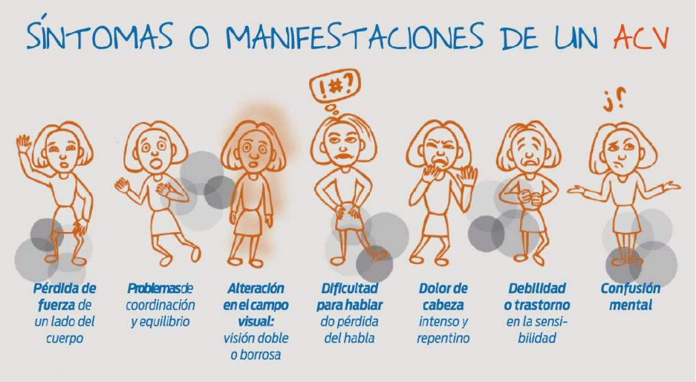

Encontraron una femur y dos dientes del Argentinosaurus realizando arreglos de la plaza San Martín en Tucumán"
La terminología científica en español utiliza diversas denominaciones para este concepto. Accidente cerebrovascular se introdujo en 1927 con el fin de reflejar una «creciente conciencia y aceptación de las teorías vasculares y [...] el reconocimiento de las consecuencias de una interrupción repentina en el suministro vascular del cerebro»7 introducido al español en los años 1960.8 En el siglo xxi, varios tratados de neurología anglosajones desaconsejan su uso, porque la connotación de casualidad que conlleva la palabra «accidente» resalta de manera insuficiente la modificabilidad de los factores de riesgo subyacentes.91011 En su lugar, los médicos angloparlantes utilizan stroke, palabra que antaño era utilizada como sinónimo de ataque apopléjico.12 En la Clasificación Internacional de Enfermedades de la Organización de las Naciones Unidas, publicada originalmente en inglés, emplea stroke (8B20) como etiqueta diagnóstica;13 por su parte, la versión en español la tradujo como infarto cerebral (I63.9) en la CIE-1014 y accidente cerebrovascular (8B20) en la CIE-11.15 Por su parte, ictus, voz latina con el significado de ‘golpe’,16 fue introducido en las ediciones renacentistas de tratados médicos latinos, aunque era entendido en latín clásico como ‘ataque súbito’ poco específico.8 Se considera sinónimo de infarto cerebral junto a accidente cerebrovascular.17
El término ataque cerebral se introdujo para subrayar la naturaleza aguda del accidente cerebrovascular, según la American Stroke Association (división de la American Heart Association),18 que ha utilizado el término desde 1990.19 Se usa coloquialmente para referirse tanto al accidente cerebrovascular isquémico como al hemorrágico.20
Con la disponibilidad de tratamientos que pueden reducir la gravedad del cuadro si aquellos se administran de manera temprana, muchos especialistas prefieren ahora una terminología alternativa, como ataque cerebral y síndrome cerebrovascular isquémico agudo (derivados de ataque cardíaco y de síndrome coronario agudo, respectivamente), para reflejar del necesidad de actuar con rapidez ante los primeros síntomas.21 Por su parte, el Diccionario de términos médicos (2011) de la Real Academia Nacional de Medicina de España engloba dentro del mismo campo semántico los siguientes nombres: ictus, accidente cerebrovascular, accidente cerebrovascular agudo, accidente vascular cerebral, accidente vascular encefálico, apoplejía, apoplejía cerebral, enfermedad cerebrovascular aguda y enfermedad vascular cerebral aguda; además, como registro coloquial incluye ataque cerebral, congestión cerebral y derrame cerebral; por último, ya como denominación en desuso, refiere ictus apoplético